Vad jag äger och varför
Portföljen
Jag går snabbt igenom alla mina case och varför jag äger dessa. Tänk på att detta är ingen fakta och bör inte användas som någon grund för att köpa eller sälja bolag x. Informationen kan vara utdaterad eller helt enkelt fel, skriv gärna till mig om du hittar något på är knasigt.
Observera att alla bolag i portföljen inte är med här, utan vissa är helt enkelt för små innehav för att göra någon substantiell skillnad.
Evolution
Evolution är ett B2B företag som sysslar med att leverera casinospel till B2C aktörer som Betsson och Kindred. Verksamheten handlar om att utveckla spel som är kopplade till live casino och RNG spel (slots).
Här är vad jag ser med min first-level analys:
- ESG kollektivet hatar iGaming bolag –> kommer alltid att värderas lägre än vad som är representativt för kassaflöden
- Marknaden är generellt omogen och det finns mycket att hämta global inom iGaming värden
- Allt fler marknader regleras och därmed skiftar till de etablerade aktörerna
- Ledningen har visat sig paranoida för att tappa greppet om sin ledande position - Detta anser jag mycket positivt
- Pilotskolan - Insiderägande och nyligen stort 100 mkr köp av Martin Carlesund (vd)
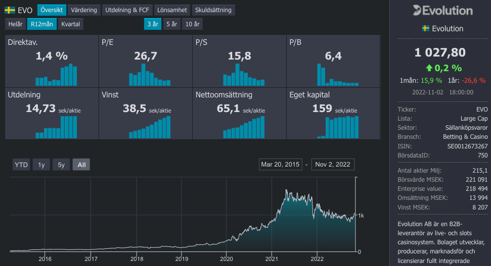
Från ett risk/reward perspektiv anser jag att det är intressant att äga Evolution.
Raketech
Raketech är verksamma inom affiliate marketing branschen med fokus på casino och sportsbetting kunder. Jag gillar bolaget för att bolaget är ganska litet med ca 700 mkr i market cap och att bolaget leds av en trovärdig vd. Oscar Mühlbach (vd) har under sin tid vid rodret gjort precis det som han pratat om att göra, det gör han även trovärdig att fortsätta leverera på sina åtagande.
Raketech har mellan 2016-2021 haft en CAGR på 30 procent i omsättning, vilket delvis har tillkommit genom förvärv och delvis organiskt. Just nu har bolaget en nettoskuld på ca 150 mkr vilket kan jämföras med vinsten på runt 80-90 mkr.
Här är mina huvudsakliga saker jag tittar på:
- Nettoskulden är ganska hög –> Troligen färre förvärv och lite lägre tillväxt framåt
- Risker för att integrationer med förvärvade bolag inte går bra
- Det finns mycket potential att hämta i USA i samband med att den marknaden öppnar upp
- Affiliate cloud har en potential som ej räknas med, antagligen skalbart på sikt. Känns som en rimlig grej.
- Grundarna finns kvar i krokarna i bolaget och har mycket erfarenhet. Största ägaren är mycket hemlig.
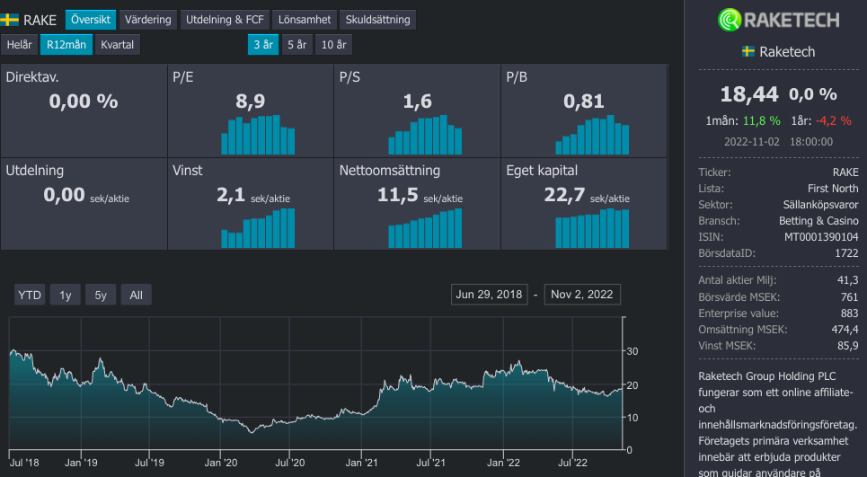
Teqnion
Teqnion är en industrigrupp som består av ca 20-25 dotterbolag där de flesta omsätter runt 50 miljoner. Något bolag omsätter strax över 100 miljoner och något är så pass litet som 20 miljoner. Alla alla nästan alla bolag var lönsamma under 2021 och övergripande ser underliggande bolagen bra ut.
Detta ser jag i Teqnion:
- Bra ledning som jobbar hårt och är nere på jorden - ger mig Berkshire känslor
- Decentraliserad styrning, när Teqnion köper ett bolag så förändras inte kulturen i bolaget som förvärvas. Bra för entreprenören, bra för att minimera overhead
- Kapitalstrukturen känns sund med att förvärva nya bolag genom vinster och banklån
Jag har haft tur, jag har träffat Johan Steene två gånger och han är en stor inspirationskälla till mig för att göra bra grejer. Sist jag såg han tog jag en selfie jag bjuder på.

Tack Johan för din energi!
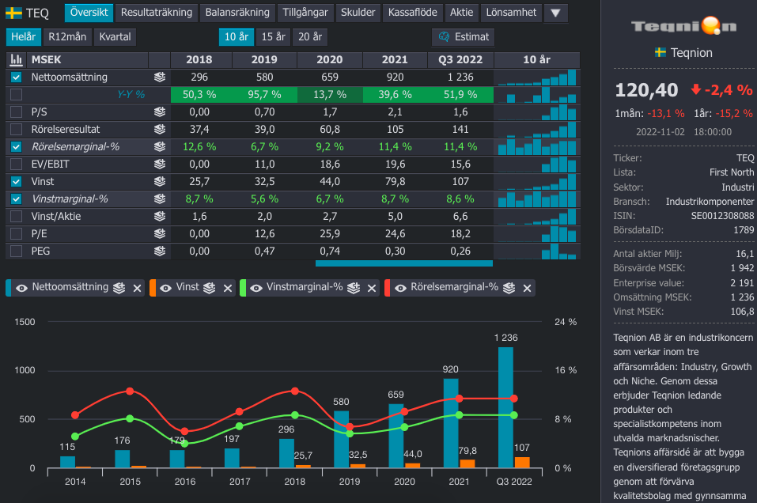
CAG Group
CAG Group är ett IT-konsultbolag som har stor andel exponering mot försvarsindustrin. Kort och gott är det ett play på att digitaliseringen inom försvaret ska ökat och bli allt högre, framtidens krig kommer handla lika mycket om det digitla som det fysiska.
Under lång tid har Sverige haft en låg andel av sin BNP avsatt till försvaret jämfört med historiskt.
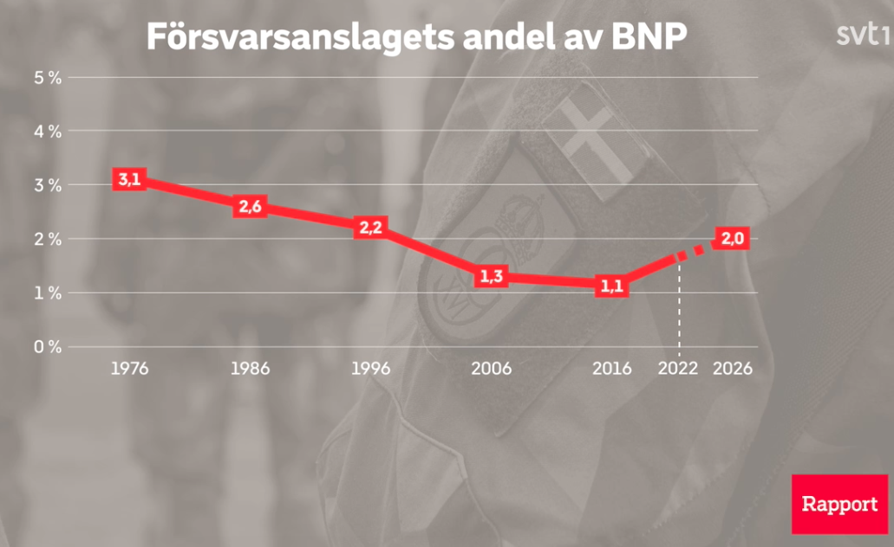
I framtiden kommer denna att vara högre.
Det jag ser i CAG Group:
- Försvaret kommer att lägga mer pengar där man står, företag som redan är inne och jobbar kommer att få allt mer arbete att göra.
- Oavsett om konjunkturen går bra eller dåligt härifrån så kommer CAG att gå starkt operationellt.
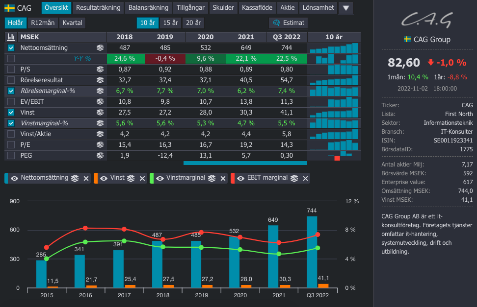
New Wave
New Wave är verksamma inom branschen med profilkläder till företag, sportkläder genom varumärket Craft samt ett litet segment som sysslar med att blåsa glas i Småland.
Det jag ser i New Wave är följande:
- Craft som varumärke har mer att hämta, med sina utmärkta träningskläder tror jag att resan kommer fortsätta
- Ledningen genom Torsten Jansson och hans enorma ägande anser jag stark
- Negativt med New Wave är att marginalerna antagligen är lite för höga för att var hållbara vilket kanske också innebär att bolaget är dyrt
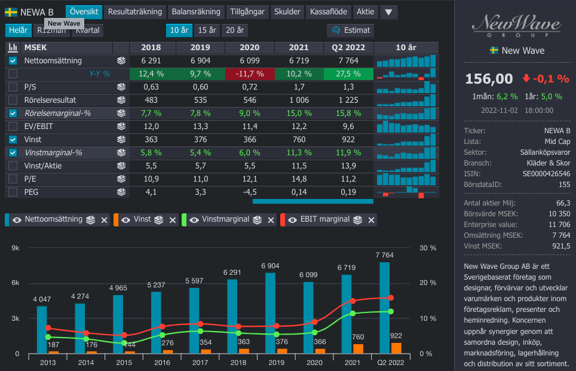
iMint
iMint sysslar med en “stabilisering mjukvara” för videos genom deras mjukvara VidHance. Majoriteten av kunderna är kinesiska och där är flera nischade mobiltillverkare.
Det jag ser i iMint är:
- Det ser billigt ut, \(\frac{EV}{EBIT}=10\) –> Växer med runt 20 procent på årsbasis
- Q2 2022 var svagt med en rörelsemarginal på 10 procent, tidigare alltid runt 20 procent
- Stor kinesisk exponering
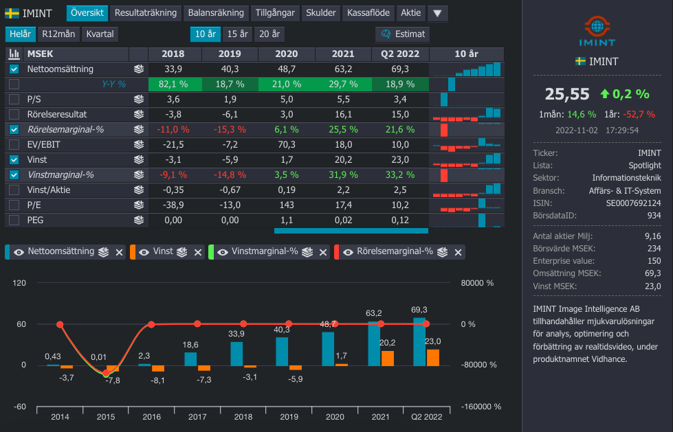
iMint är inget stort innehav, men det ser helt klart spännande ut med mycket tillväxt och låga multiplar. Upplever generellt produkten som skalbar, däremot är antagligen uppsidan begränsad likt en kontraktstillverkare.
Nepa
Nepa är ett marknadsundersöknings bolag som under en lång tid var en undervattensdrake som nyligen passerat vattenytan och börjar tjäna pengar. Bolaget har under en längre tid sysslat med konsulttjänster, men under senare tid klassas allt mer av intäkterna som återkommande vilket bör skapa stabilitet.
Detta ser jag i Nepa:
- Grundare är återigen vd, han äger mycket aktier och verkar stadig
- \(\frac{EV}{EBIT}=8.9\) vilket jag anser är billig för ett bolag som växer med ca 13 procent
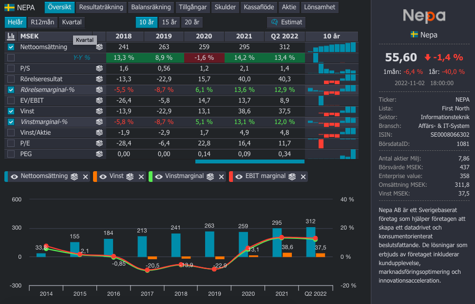
Devport
Devport är ett konsultbolag som riktar sig främst mot fordonsindustrin. Verksamma inom produktion och digitalisering, vilket generellt har varit en bra bransch. Devport har under lång tid växt på väldigt bra med 21 procent CAGR mellan 2016 till 2021. Fordonsindustrin är däremot känd för att vara lurig och att snabbt kasta ut sina konsulter när marknaden viker. Med det i åtanke låter det som att bolaget ska värderas till runt P/E 15, vilket det har gjort historiskt. Baserat på Q3 2022 så värderas Devport till P/E 11.
Detta ser jag i Devport:
- Historiskt starkt presterande bolag, verkar ha skön & lokal kultur
- Stark ägande från Per Rodert och hans bror (?) som förvaltar pengar åt någon oklar familj.
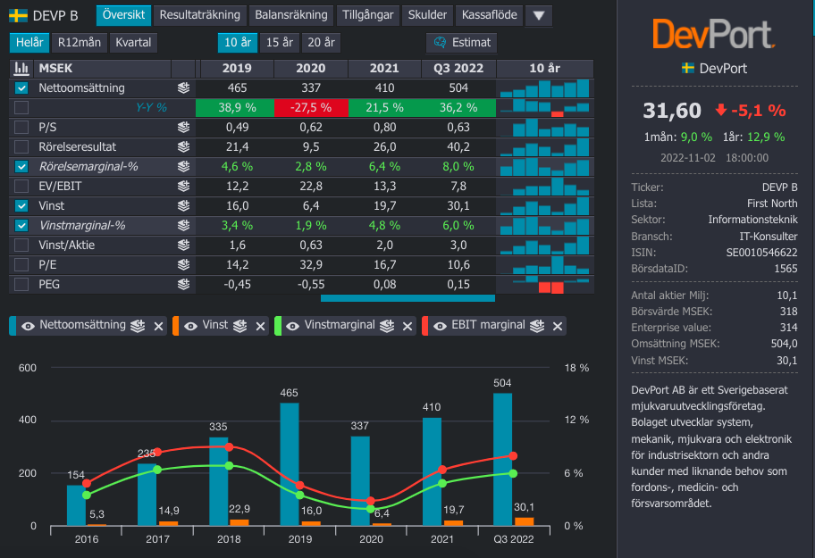
Creades
Creades är Sven Hagströmers investmentbolag som består till stor grad Avanza, onoterade bolag samt lite annat noterat som Excitech exempelvis. Även den svenska SPAC maskinen Creaspac, finns i portföljen.
Vad ser jag i Creades:
- Jag gillar Sven Hagströmer, han är en bra människa
- Historiskt ett fint bolag
Jag äger väldigt lite i Creades.
Volati
Volati är en industrigrupp som påminner lite om Teqnion fast det är mycket större. Volati har haft starka ägare under en lång tid, med en skarp och färgstark styrelseordförande vid namn Patrik Wahlén. Volati har exponering mot många olika typer av industri vilket alla ser ut att vara vettiga verksamheter.
Detta ser jag i Volati:
- Lite lägre tillväxt framåt då balansräkningen ser ganska tung ut
- Fortsatt bra utveckling för dotterbolagen
- Jag ser lite på Volati som ett större Teqnion med mer etablerad profil samt att Volati köper ganska mycket större bolag än vad Teqnion gör
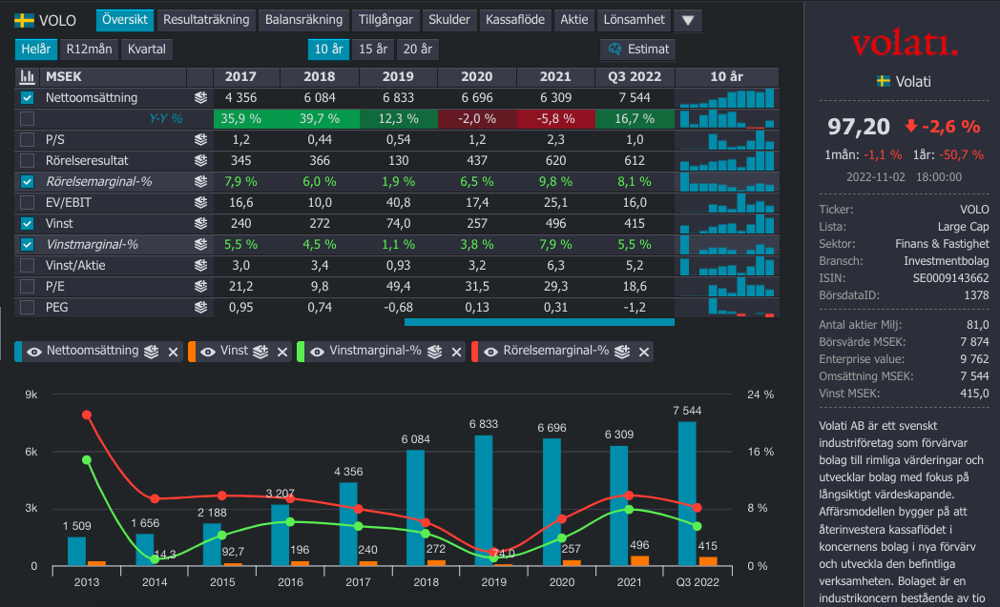
Waystream
Sista bolaget ut är Waystream. Det är ett bolag som jag bevakar med en jätteliten post.
Waystream sysslar med att sälja access-switchar till stadsnät som i sin tur tenderas att drivas av kommuner. Exempelvis är allt stadsnät i Luleå drivet av Lunet som i sin tur behöver tusentals access-switchar att placera ut på de platser där det går mycket trafik. Waystreams produkter är generellt inom premiumsegmentet och det är hållbara switchar som sällan går ner som säljs.
Jag gillar waystream, speciellt med Fredrik som har klivit in som vd nu och har en bättre säljprofil. Q3 2022 var helt ofantligt stark och det var helt klart ett trendbrott i hur bolaget har gått jämfört med tidigare. Värderingen har dragit iväg från ca P/E 10 till runt 22 nu.
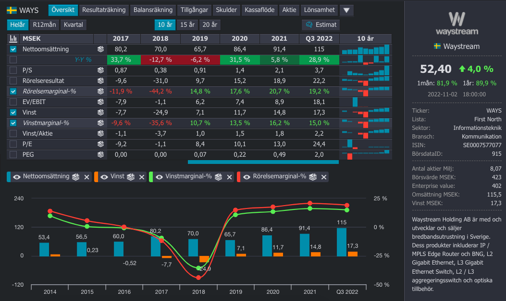
Detta ser jag i Waystream:
- Fortsätt bra försäljning till allt fler kommuner som inte längre vill eller vågar köpa från kinesiska Huawei.
- Expansion i DACH länderna, främst i Tyskland.
Samtidigt vet jag inte så jättemycket om Waystreams ledning, ägande, konkurrenter osv. Ta allt med en nypa salt.